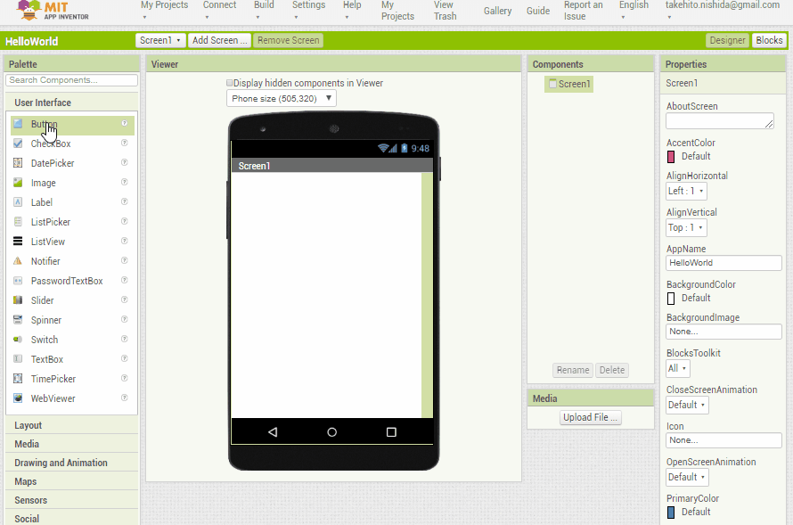
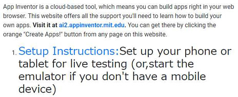
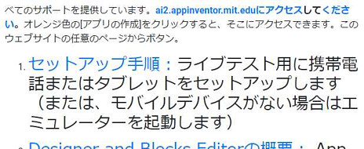
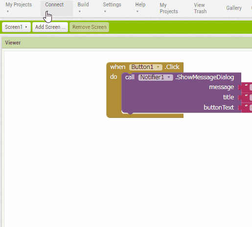

概要
「App Inventor」は、Androidアプリを開発するソフトウェアです。Scratchライクなプログラミングでブラウザ上でブロックを組み合わせてアプリを作ります。

「App Inventor」は、MITとGoogleで開発され2010年 12月15日に公開されました。しかし、2011年8月にGoogleは自社製品としての配布を終了し、その後にオープンソース化しました。
現在は、MITの研究所が引き継いでいます。
導入
ウェブサービスですので、ブラウザがあれば開発できます。
対応しているブラウザは以下の通りです。本記事ではGoogle Chromeを使います。
- Mozilla Firefox 3.6以降
- Apple Safari 5.0以降
- Google Chrome 4.0以降
プログラムは基本的にクラウドに保存されます。ローカルからの読込みとローカルへの書込みも可能です。
導入は、公式サイトにある手順で行います。
「Get Started」に進んでください。
ブラウザの日本語翻訳機能を使うと便利です。以下はGoogle Chromeの例です。
元。

翻訳後。

「Setup Instructions」に進んでください。
手順の選択（Option）としては3つあります。複数の手順を行ってもOKです。私は選択1と選択2を行いました。
- 選択1
- ・AndroidデバイスとWiFi接続を使用してアプリを作成します。
- ・本記事で説明します。
- 選択2
- ・エミュレーターを使用してアプリを作成します。
- ・本記事では説明しませんが、「The App Inventor Setup Software」をインストールする以外は選択1とあまり変わりません。
- 選択3
- ・WiFi接続できないので、AndroidデバイスをUSB接続してアプリを作成します。
- ・私はうまくいきませんでした。。。
選択1(Option One)に進みます。
ブラウザの日本語翻訳機能を使えば、大体理解できると思います。手順通り行います。
(1) Google Play のアプリ「MIT AI2 Companion」をAndroidデバイス（スマホ）にインストールします。
(2) コンピューターとAndroidデバイスの両方を同じWiFiネットワークに接続します。
(3) App Inventorプロジェクトを開き、デバイスに接続します。
・ この手順は、PCとAndroidデバイスの接続が切れた場合に行うので頻繁に行う手順となります。
・ Androidデバイスと連携がうまくいかない場合は、Resetを実行してから再度接続し直すとうまくいく場合があります。
リセットからの再接続

注意点
本記事は、2020年2月のものです。「App Inventor」のバージョンは2.57です。